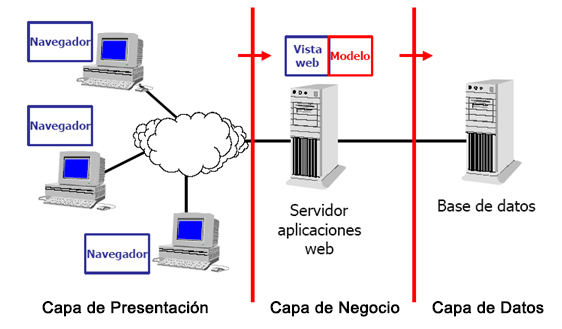
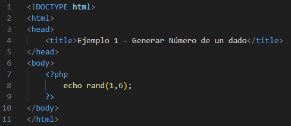
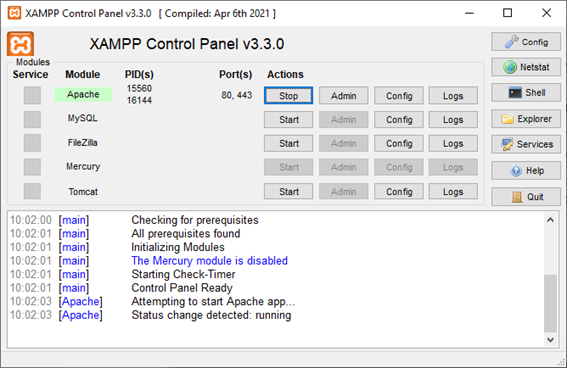
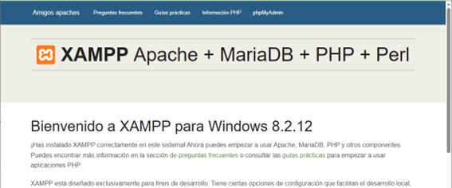
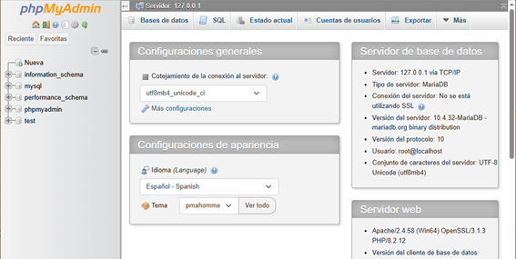
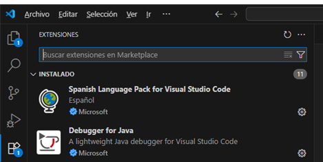

UD1 - Introducción y Arquitectura de Aplicaciones Web
1.1. Modelos de programación en entorno cliente-servidor
Las aplicaciones web se basan en el modelo cliente-servidor: un modelo distribuido donde los servidores proveen servicios (información, recursos) y los clientes los solicitan.
- Es el cliente quien inicia siempre la comunicación enviando una solicitud
- El servidor responde con el recurso solicitado o con un mensaje de error
- La comunicación se realiza mediante HTTP (puerto 80) o HTTPS (puerto 443)
- Cliente y servidor suelen estar en máquinas diferentes conectadas por red, aunque pueden estar en el mismo equipo
En la web, el cliente es habitualmente un navegador que solicita páginas al servidor web.
1.1.1 Arquitectura a tres capas
Es una ampliación del modelo cliente-servidor que separa la aplicación en tres capas independientes:
| Capa | Función | Dónde se ejecuta |
|---|---|---|
| Presentación | Interfaz de usuario: muestra información y permite interactuar | Navegador (cliente) |
| Negocio | Lógica de la aplicación; se comunica con las otras dos capas | Servidor web |
| Datos | Gestión de la base de datos | Servidor de BD |
Comunicación entre capas
La capa de presentación no se comunica directamente con la de datos. Toda la comunicación pasa por la capa de negocio.

Ejemplo — Login en una aplicación web:
- El navegador envía el formulario → capa de presentación
- El servidor comprueba las credenciales contra la BD → capa de negocio consulta la capa de datos
- Según la respuesta, se permite el acceso o se muestra un error → de vuelta a la capa de presentación
Actividad 1
Pon un ejemplo del modelo a 3 capas describiendo lo que sucede en cada capa, similar al ejemplo del login anterior.
Actividad 2
Visita la web del W3C (www.w3.org) para ver la lista de sus estándares. Investiga qué es un Estándar Web (Web Standard) y qué es una Recomendación (Recommendation).
1.2. Generación dinámica de páginas web
Las páginas escritas solo en HTML son páginas estáticas: siempre muestran el mismo contenido. Cuando se usan lenguajes de programación en el servidor, el contenido puede generarse en función de la solicitud del cliente: son las páginas web dinámicas.
1.2.1 Opciones para ejecutar código en el servidor
- Servidores de aplicaciones: entornos específicos como Tomcat (Java), IIS (ASP.NET) o Node.js (JavaScript)
- Servidores web tradicionales: Apache o Nginx, configurados con módulos para ejecutar PHP, Python, etc.
- Frameworks específicos: Django (Python), Laravel (PHP), Ruby on Rails (Ruby)
1.2.2 Lenguajes de programación en entorno servidor
| Lenguaje | Frameworks / Entornos habituales |
|---|---|
| Java | Tomcat, JBoss, Spring |
| PHP | Apache, Nginx, Laravel, WordPress, Symfony |
| JavaScript | Node.js, Express.js |
| Python | Django, Flask, Pyramid |
| Ruby | Ruby on Rails |
| C# (.NET) | ASP.NET (servidores Windows) |
Algunos de los frameworks más utilizados:
- PHP → Laravel, Symfony
- Python → Django, Flask
- JavaScript → Angular, Node.js
Actividad 3
Busca información sobre otros lenguajes de programación en el lado del servidor e indica para qué se recomiendan.
1.3. Integración con los lenguajes de marcas
Las páginas dinámicas combinan código estático (HTML) con código dinámico (PHP u otro lenguaje de servidor).
Ejemplo — Número aleatorio con PHP:

Al solicitar esta página, el servidor ejecuta el bloque PHP (líneas 7-9) y lo sustituye por su resultado. Si sale un 3, el cliente recibe:
Los archivos PHP deben tener extensión .php
Un archivo .html no ejecuta PHP porque PHP necesita ser interpretado por el servidor (Apache, Nginx...). Para que funcione, el archivo debe llamarse .php.
Actividad 4
Busca e indica qué caracteres se utilizan para insertar código ASP y JSP dentro de páginas HTML.
1.4. Instalación del entorno de trabajo
Para las prácticas del curso necesitamos:
- Un servidor web → Apache (incluido en XAMPP)
- Un servidor de base de datos → MySQL/MariaDB (incluido en XAMPP)
- Un editor de código → Visual Studio Code
1.4.1 XAMPP
XAMPP es un paquete que incluye en una sola instalación:
| Componente | Función |
|---|---|
| Apache | Servidor web |
| MySQL/MariaDB | Sistema gestor de bases de datos |
| PHP | Lenguaje para desarrollo web |
| phpMyAdmin | Interfaz web para gestionar la BD |
| Perl | Lenguaje adicional (menos usado) |
Se usa para montar un servidor local en tu PC y probar aplicaciones web sin necesidad de un servidor externo.
Instalación en Windows
- Descarga desde https://www.apachefriends.org → versión para Windows
- Ejecuta el instalador
.exe - En la selección de componentes, deja marcados: Apache, MySQL, PHP y phpMyAdmin
- Carpeta de instalación: deja el valor por defecto
C:\xampp - Al finalizar, marca Iniciar Panel de Control de XAMPP

Verificar la instalación
- Apache: lanza Apache desde el panel de control y accede a
http://localhost→ debe aparecer la página de bienvenida de XAMPP
- MySQL: arranca el servicio MySQL y accede a
http://localhost/phpmyadmin/→ debe aparecer la interfaz de phpMyAdmin
Actividad 5
Realiza la instalación de XAMPP siguiendo los pasos indicados.
Actividad 6
Accede a phpMyAdmin, crea una base de datos llamada moviles y crea una tabla usuarios con al menos los campos: id, nombre, email, password.
1.4.2 Visual Studio Code
VS Code es un editor de código gratuito y multiplataforma de Microsoft, ampliamente usado para desarrollo web (HTML, CSS, JavaScript, PHP, Python, Java...).
Instalación en Windows
- Descarga desde https://code.visualstudio.com
- Ejecuta el instalador
.exe - En las opciones adicionales, se recomienda marcar:
- Add "Open with Code" action to Windows Explorer file context menu
- Add "Open with Code" action to Windows Explorer directory context menu
- Register Code as an editor for supported file types
- Add to PATH
Primeros pasos
- Cambiar idioma:
Ctrl+Shift+X→ busca Spanish Language Pack for Visual Studio Code → instala y reinicia
- Extensiones por lenguaje: instala desde el mismo panel de extensiones la extensión de PHP, Python, etc. según lo que vayas a programar
Autoevaluación
1. El W3C:
- a) Elabora servidores de aplicaciones
- b) Elabora y mantiene estándares de tecnologías web
- c) Elabora regulación de obligado cumplimiento para los desarrolladores
2. El lenguaje básico para la elaboración de páginas web es:
- a) HTML
- b) HTTP
- c) HTTPS
3. En el modelo a tres capas, la lógica de la interfaz gráfica se sitúa en la capa de:
- a) Presentación
- b) Datos
- c) Negocio
4. En el modelo a tres capas, no hay comunicación directa entre:
- a) La capa de datos y la capa de negocio
- b) La capa de presentación y la capa de negocio
- c) La capa de datos y la capa de presentación
5. En el modelo cliente-servidor, la comunicación la inicia:
- a) El cliente
- b) El servidor
- c) Cualquiera de los dos
¿Cuál es el puerto asociado al protocolo HTTP?
- a) 553
- b) 80
- c) 21
¿Cuál es el puerto asociado al protocolo HTTPS?
- a) 443
- b) 80
- c) 21
XAMPP incluye:
- a) Servidor web y PHP
- b) Servidor web, PHP y servidor de base de datos
- c) Servidor de bases de datos y PHP
¿Cuál de los siguientes no es un estándar del W3C?
- a) HTML
- b) CGI
- c) HTTP
10. Un archivo .html ¿reconoce el código PHP?
- a) Sí, siempre
- b) Directamente no, pero sí puede hacerlo si renombramos el archivo a
.php - c) Ninguna es correcta